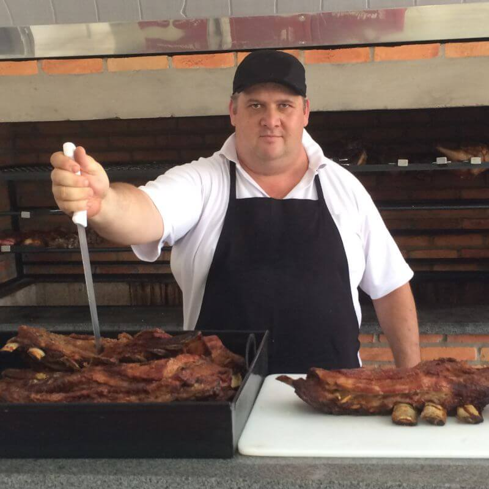
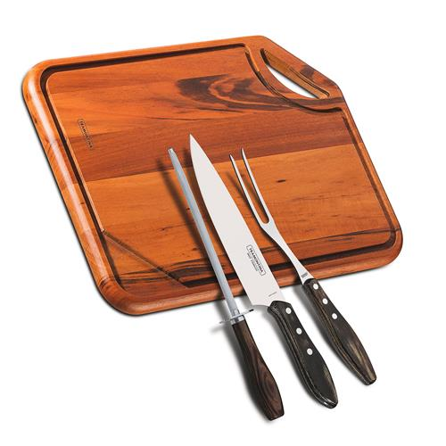
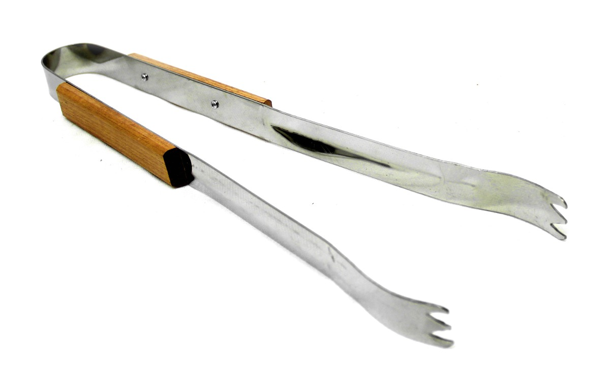
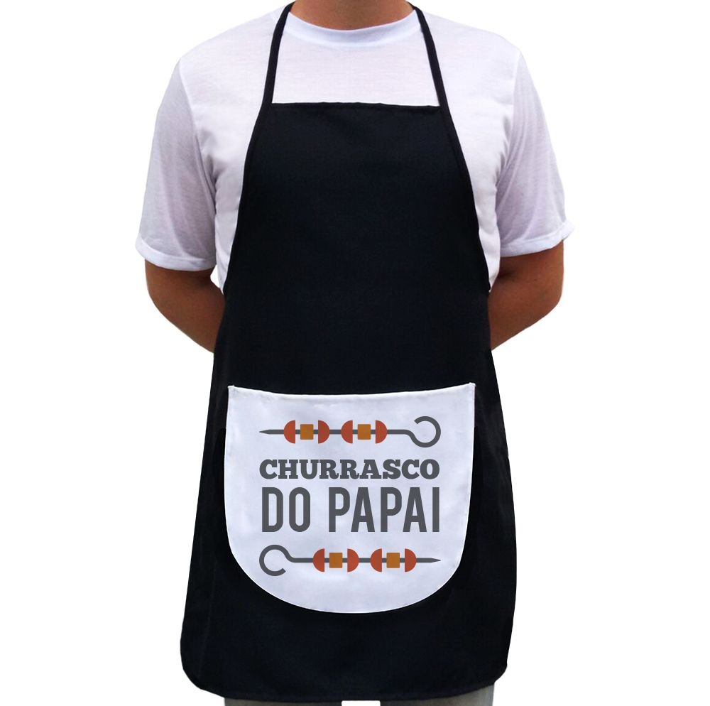
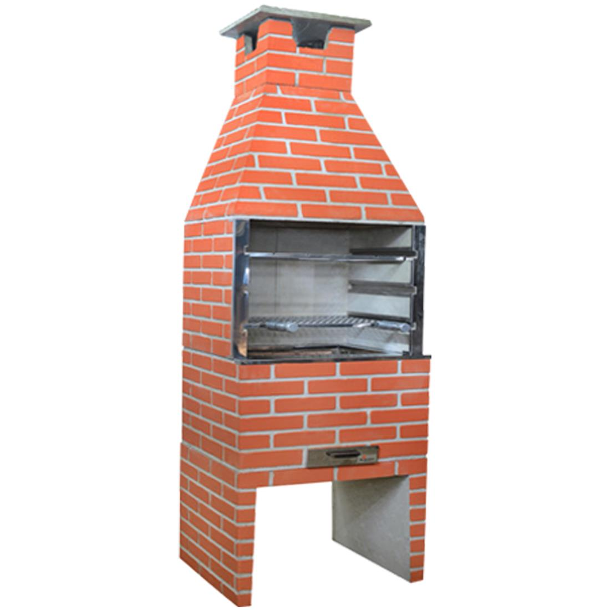
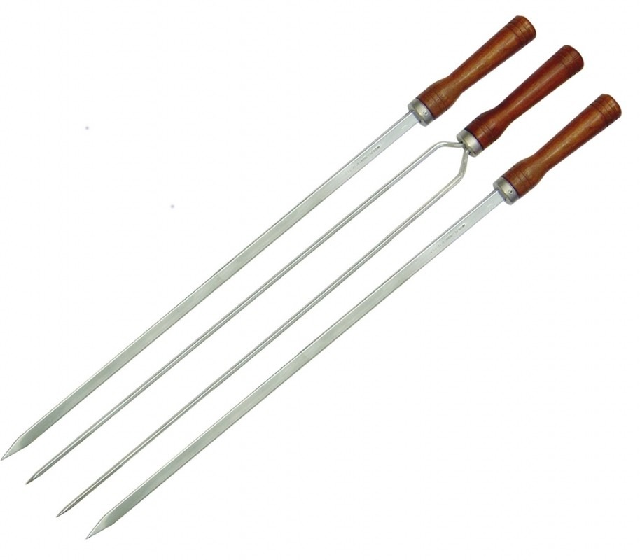

Utensils
Some essentials to become a professional "churrasqueiro"(who makes it):

Must haves

A good knife, cutting board,
knife sharpener,
and a big two point fork.
A big pair of prongs

best instrument to flip your meat
without burning yourself.
An apron

Just to make sure you don't
get your clothes dirty.
Preferebly one with a joke.
A typical brazilian
Charcoal grill

Reliable and good looking.
What else can you ask for?
Churrasco
Skewers

Churrasco skewers to properly make some cuts of meat such
as cupim, and chicken wings
Food
Home
Ambient
Tutorials